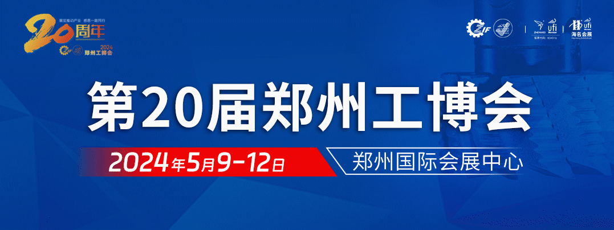
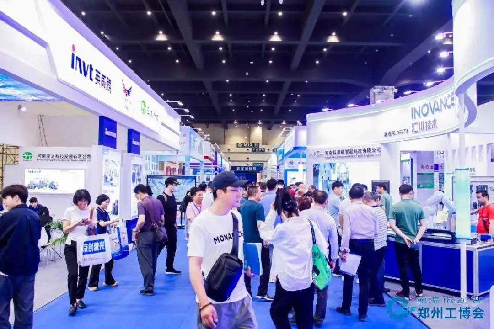
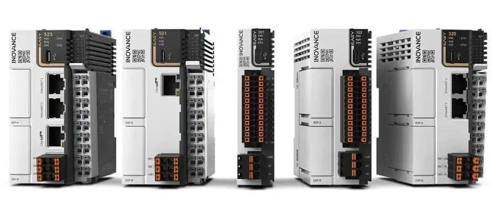
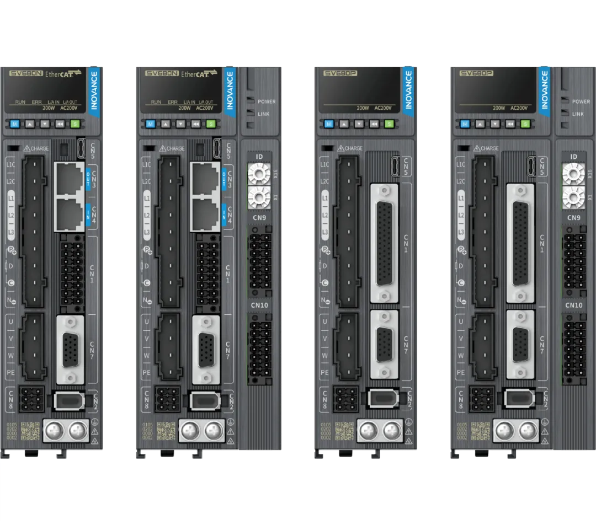
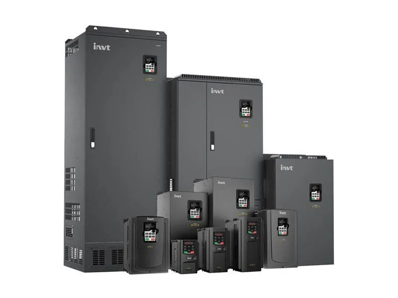
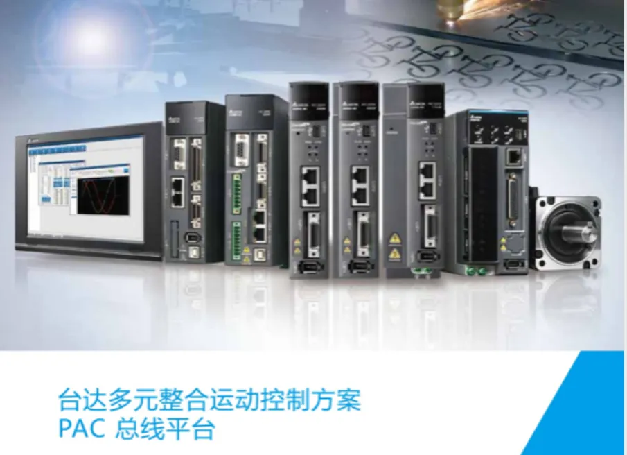
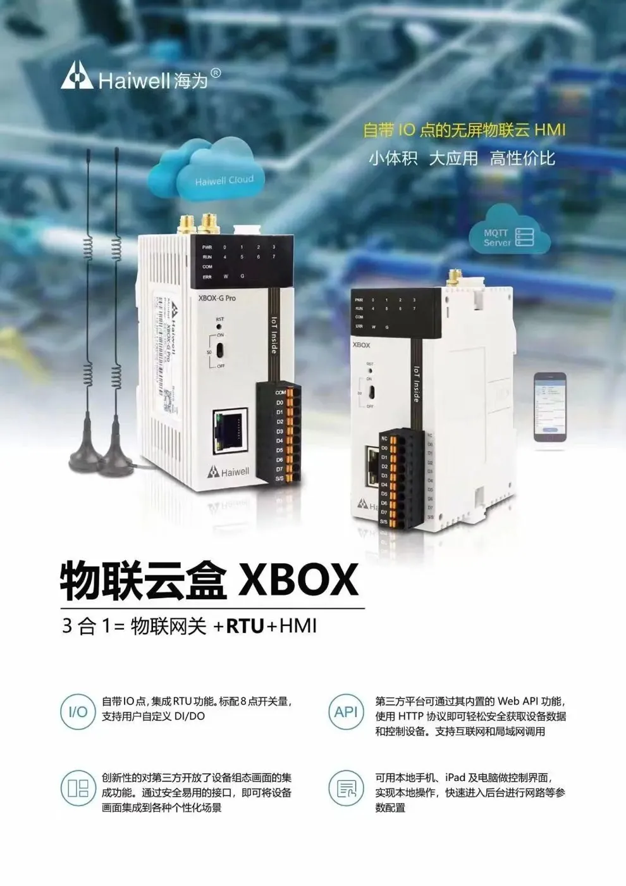
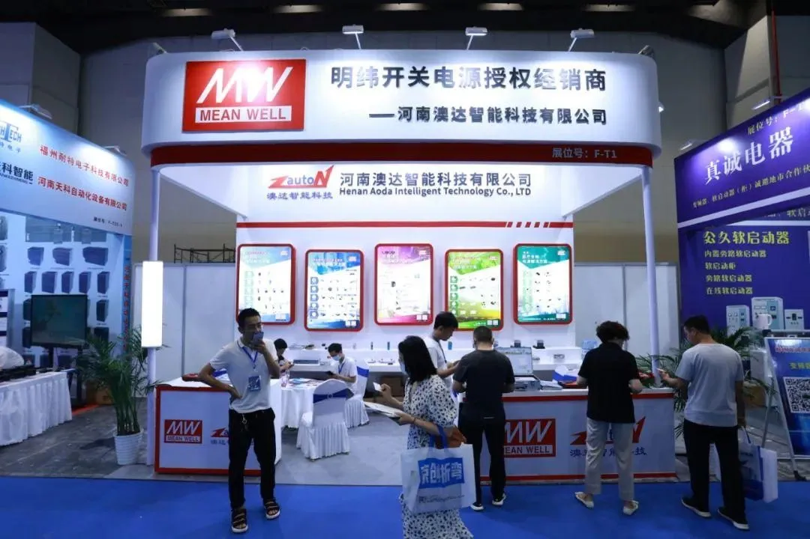

名企会聚，大牌云集 | 西门子、汇川、英威腾、台达等品牌齐聚2024郑州工业自动化展
首页 / 名企会聚，大牌云集 | 西门子、汇川、英威腾、台达等品牌齐聚2024郑州工业自动化展
2024郑州工业自动化展
党的二十大报告明确提出，要坚持把发展经济的着力点放在实体经济上，加快建设制造强国、网络强国、数字中国，推动制造业高端化、智能化、绿色化发展。以“数字化+智能化”为核心的数智化转型，已成为促进产业链、供应链高效协同和资源优化配置的有效手段，是赋能制造业绿色低碳高质量发展的重要引擎，也是推动我国经济社会高质量发展的重要方向。
近年来，河南省新产业、新技术、新业态和新模式蓬勃发展，传统产业改造升级步伐加快，推动河南省经济新旧动能转换呈现良好势头。
第20届郑州工业自动化及机器人展将于2024年5月9-12日在郑州国际会展中心隆重启幕！届时众多国内外知名品牌集中亮相，将吸引西门子、汇川、英威腾、台达、厦门海为、苏州明纬等企业参与，展示前沿产品与技术及创新解决方案，助力行业开启“加速跑”新征程。

西门子—北京天拓四方
北京天拓四方科技有限公司成立于2003年，依托自主可控的工业互联网软硬件技术研发，提供场景应用产品和解决方案，助力工业智能化践行落地。
砥砺前行二十载，天拓四方以“致力于成为工业互联网平台研发和创新应用的领先者”为愿景，以对中国工业发展进程的深刻理解和洞察，将自主研发的工业互联网平台和优质的智能制造技术及解决方案与我国工业发展实际相结合，形成了行业优秀的工业互联网整体服务能力，并自主研发了拥有自主知识产权的“数网星工业互联网平台”及系列化边缘计算、数据采集、网络、通讯、电气配套等嵌入式智能硬件。在政府、企业、教育等领域提供智能制造咨询规划、设计实施、工业互联网平台及创新集成应用等智能制造整体解决方案和“万企上云”的落地实践，客户遍及危化、机床、高科技电子、半导体、线缆、纺织、智能设备、冶金 等工业行业以及各级政府和广大院校。
参展产品：工业互联网软硬件技术研发，提供场景应用产品和解决方案
汇川—科威腾智


河南科威腾智能科技有限公司成立于2007年，15年来秉承“专注于工业自动化，成就客户更大价值”理念，凭借超1000个客户的服务，超500个工程项目的执行，在河南工控行业创下良好口碑。
工业自动化控制一站式定制解决方案
工控产品销售与整个项目系统的开发相结合，能为客户优化系统配制，节约更多的资金和时间，使沟通更方便，服务更周到，及时，周到！
客户为先，技术为源
以成就客户为先导，依托一流的品牌生产商，打造一流的技术型销售团队与产品支持团队。除后勤团队外的所有科威腾人全部经过技术岗位的磨砺，最终成为科威腾客户的服务者。
参展产品：汇川伺服电机驱动器，变频器，PLC
英威腾—河南亚太

河南亚太科技发展有限公司是专业从事智能制造系统集成、过程自动化、工厂电气自动化、DCS集散控制系统等的开发、生产、销售和技术服务为一体的高科技创新型企业，公司提供的专业解决方案满足了冶金、石油化工、食品机械、纺织机械、水利国电、包装机械等多行业、多领域的严格的差异化需求，本公司拥有一支高素质、高技能、朝气蓬勃的技术开发及售后服务队伍，以不断的创新技术、可靠的产品质量、具有竞争力的价格和服务，在业界赢得了良好的声誉本公司通过多年来的积累现已成为德国西门子品牌正规授权经销商；深圳英威腾品牌核心合作伙伴及联保中心；成立了专业的“工控产品维修中心”，精修各种高中低压变频器、PLC、触摸屏、伺服驱动器、直流调速器等工控产品。在给客户提供高性价比产品的同时为产品售后服务提供了技术保障。
参展产品：英威腾变频器、伺服、plc
台达—郑州博润

公司成立于2003年，是一家提供机电一体化解决方案、代理多品牌优质工控产品和机械传动产品，同时承接自动化项目和各种非标电气柜的设计生产的专业性公司。
公司经营的所有产品均享受全国联保服务。公司针对销售的系列产品，以应用技术和服务为核心竞争力组建了一支技术专业、经验丰富的销售服务团队，向各类用户提供全方位、高水平的一站式服务。
经过多年的深耕，博润机电已在传动控制领域建立起良好的信誉。我们以“以人为本，品质为先，客户至上，团结合作”为发展策略；以为客户提供先进、高效、灵活、完整的解决方案，形成集解决方案、采购、仓储、物流、销售、服务为一体的全面整合型服务企业为目标。我们有信心通过我们最大的努力为客户提供最好的服务。
参展产品：台达核心渠道：伺服、变频器、PLC、触摸屏、开关电源、工业机器人、视觉系统、温控仪表、接近光电传感器、组态软件、工控机等。
厦门海为—新创达

厦门海为科技有限公司 成立于2005年，是一家集自主研发、生产、销售及服务为一体的国家级高新技术企业，专业从事先进制造、自动化和工业物联网领域产品研发与销售。总部位于厦门集美软件园三期，制造中心坐落于火炬高新区（翔安）产业区。
自主研发的产品包括海为云平台、企业平台、云APP、物联网PLC、物联云HMI、物联云盒Cloud Box、PLC控制器、Cloud SCADA 云组态软件（免费组态）、大屏控制器TVBOX等。广泛应用于智慧工厂、智能农业、智慧光伏、智慧养殖、智能消防、智能充电桩等各行业领域。
苏州明纬—河南澳达

明纬公司成立于西元1982年，是全球少数以标准品电源供应器为主业的专业制造商。根据Micro Technology Consultant于2023年3月报告，在全球电源供应器(DC输出）制造商排名中，明纬名列第3，前2名电源厂大多以ODM/OEM为主要营收来源，而明纬99%营收来自标准电源，是以自有品牌-MEAN WELL为主要经营策略的电源厂商。